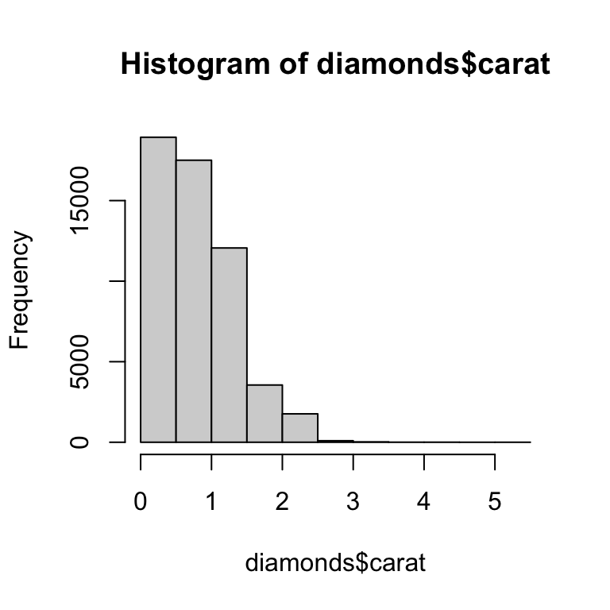
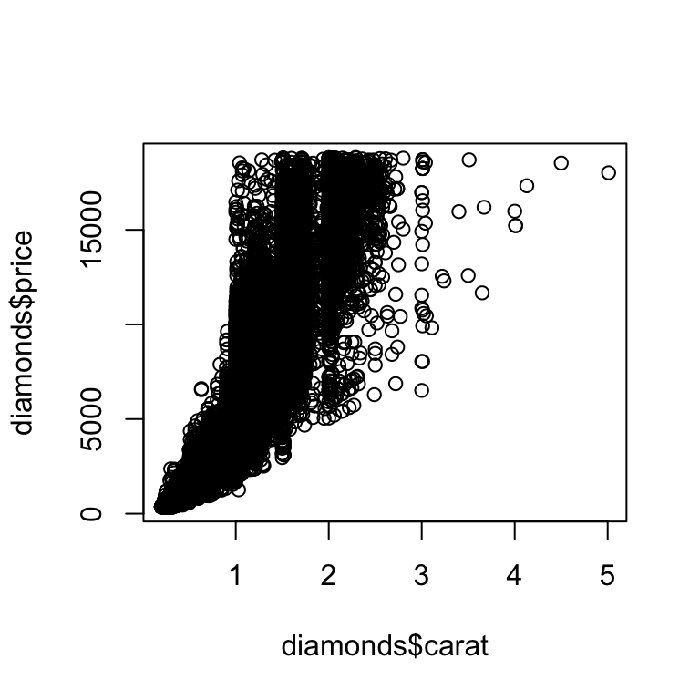

library(tidyverse)기본 R 가이드
책의 다른 부분에서는 다루지 않는 중요한 기본 R 함수들에 대해 간단히 살펴보겠습니다. 이러한 도구는 프로그래밍을 더 많이 수행할수록 특히 유용하며, 실제 접하게 될 코드를 읽는 데 도움이 됩니다.
여기서 tidyverse가 데이터 과학 문제를 해결하는 유일한 방법은 아니라는 점을 상기시키는 것이 좋습니다. 우리가 이 책에서 tidyverse를 가르치는 이유는 tidyverse 패키지가 공통적인 디자인 철학을 공유하여 함수 간의 일관성을 높이고, 각각의 새로운 함수나 패키지를 배우고 사용하기 조금 더 쉽게 만들기 때문입니다.
기본 R을 사용하지 않고 tidyverse를 사용하는 것은 불가능하므로, 우리는 사실 이미 수많은 기본 R 함수를 여러분에게 가르쳤습니다.
패키지를 로드하는 library()부터, 숫자 요약을 위한 sum()과 mean(), 요인(factor), 날짜, POSIXct 데이터 유형은 물론, +, -, /, *, |, &, !와 같은 모든 기본 연산자까지 말입니다. 지금까지 중점을 두지 않은 부분은 기본 R 워크플로우이므로, 이 장에서는 그중 몇 가지를 강조하겠습니다.
이 장에서는 [를 사용한 부분 집합 추출, [[와 $를 사용한 부분 집합 추출, apply 함수 제품군, for 루프라는 네 가지 주요 주제에 중점을 둘 것입니다.
1 [를 사용하여 여러 요소 선택하기
[는 벡터와 데이터 프레임에서 하위 구성 요소를 추출하는 데 사용되며, x[i] 또는 x[i, j]처럼 호출(called)됩니다. 이 섹션에서는 먼저 벡터와 함께 사용하는 방법을 보여준 다음, 동일한 원리가 데이터 프레임과 같은 2차원 구조로 어떻게 간단하게 확장되는지 보여주어 [의 강력함을 소개합니다.
1.1 벡터 부분 집합 추출
벡터를 부분 집합으로 추출(i.e. x[i]에서 i가 될 수 있는)할 수 있는 다섯 가지 주요 유형이 있습니다.
- 양의 정수 벡터: 양의 정수로 부분 집합을 추출하면 해당 위치의 요소를 유지합니다.
x <- c("one", "two", "three", "four", "five")
x[c(3, 2, 5)]
#> [1] "three" "two" "five"위치를 반복함으로써, 실제로는 입력보다 더 긴 출력을 만들 수 있으므로 “부분 집합 추출”이라는 용어는 다소 부적절한 명칭이 됩니다.
x[c(1, 1, 5, 5, 5, 2)]
#> [1] "one" "one" "five" "five" "five" "two"- 음의 정수 벡터: 음수 값은 지정된 위치의 요소를 삭제합니다.
x[c(-1, -3, -5)]
#> [1] "two" "four"- 논리 벡터: 논리 벡터로 부분 집합을 추출하면
TRUE값에 해당하는 모든 값을 유지합니다. 이것은 비교 함수(comparison functions)와 함께(in conjunction with) 유용(useful)하게 자주(most often) 사용됩니다.
x <- c(10, 3, NA, 5, 8, 1, NA)
# x의 누락되지 않은 모든 값
x[!is.na(x)]
#> [1] 10 3 5 8 1
# x의 모든 짝수 (또는 누락된!) 값
x[x %% 2 == 0]
#> [1] 10 NA 8 NAfilter()와 달리, NA 인덱스는 출력에 NA로 포함됩니다.
- 문자 벡터: 명명된 벡터가 있는 경우 문자 벡터로 부분 집합을 추출할 수 있습니다.
x <- c(abc = 1, def = 2, xyz = 5)
x[c("xyz", "def")]
#> xyz def
#> 5 2양의 정수를 사용한 부분 집합 추출과 마찬가지로, 문자 벡터를 사용하여 개별 항목을 복제할 수 있습니다.
- 아무것도 없음: 부분 집합 추출의 마지막 유형은 아무것도 없는
x[]이며, 완전한x를 반환합니다. 이것은 벡터를 부분 집합으로 추출하는 데는 유용하지 않지만, 잠시 후 살펴보겠지만, 티블과 같은 2차원 구조에서 부분 집합을 추출할 때 유용합니다.
1.2 데이터 프레임 부분 집합 추출
데이터 프레임에서 [를 사용할 수 있는 방법이 아주 많지만, 가장 중요한 방법은 df[rows, cols]를 사용하여 행과 열을 독립적으로 선택하는 것입니다. 여기서 rows와 cols는 위에서 설명한 벡터입니다.
예를 들어 df[rows, ] 및 df[, cols]는 빈 부분 집합을 사용하여 다른 차원을 보존하면서 행이나 열만 선택합니다.
다음은 몇 가지 예제입니다.
df <- tibble(
x = 1:3,
y = c("a", "e", "f"),
z = runif(3)
)
# 첫 번째 행과 두 번째 열 선택
df[1, 2]
#> # A tibble: 1 × 1
#> y
#> <chr>
#> 1 a
# 모든 행과 열 x, y 선택
df[, c("x" , "y")]
#> # A tibble: 3 × 2
#> x y
#> <int> <chr>
#> 1 1 a
#> 2 2 e
#> 3 3 f
# `x`가 1보다 큰 행과 모든 열 선택
df[df$x > 1, ]
#> # A tibble: 2 × 3
#> x y z
#> <int> <chr> <dbl>
#> 1 2 e 0.834
#> 2 3 f 0.601잠시 후 $로 다시 돌아오겠지만, 문맥상 df$x가 하는 일을 짐작할 수 있을 것입니다. df에서 x 변수를 추출합니다. [는 깔끔한 평가를 사용하지 않으므로, 여기서는 x 변수의 출처를 명시해야 합니다.
[와 관련하여 티블과 데이터 프레임 간에는 중요한 차이가 있습니다. 이 책에서 우리는 주로 데이터 프레임이면서 약간 더 쉽게 생활할 수 있도록 일부 동작을 조정하는 티블을 사용했습니다. 대부분의 경우 “티블”과 “데이터 프레임”을 서로 바꿔서 사용할 수 있으므로, R에 내장된 데이터 프레임에 특별한 주의를 끌고 싶을 때는 data.frame이라고 쓰겠습니다. df가 data.frame인 경우, cols가 단일 열을 선택하면 df[, cols]는 벡터를 반환하고 두 개 이상의 열을 선택하면 데이터 프레임을 반환합니다. df가 티블인 경우, [는 항상 티블을 반환합니다.
df1 <- data.frame(x = 1:3)
df1[, "x"]
#> [1] 1 2 3
df2 <- tibble(x = 1:3)
df2[, "x"]
#> # A tibble: 3 × 1
#> x
#> <int>
#> 1 1
#> 2 2
#> 3 3data.frame에서 이러한 모호함을 방지하는 한 가지 방법은 drop = FALSE를 명시적으로 지정하는 것입니다.
df1[, "x" , drop = FALSE]
#> x
#> 1 1
#> 2 2
#> 3 31.3 dplyr 등가물
여러 dplyr 동사는 [의 특수한 경우입니다.
filter()는 논리 벡터를 사용하여 행을 부분 집합으로 추출하는 것과 동일하며 누락된 값을 제외하도록 주의합니다.
df <- tibble(
x = c(2, 3, 1, 1, NA),
y = letters[1:5],
z = runif(5)
)
df |> filter(x > 1)
# 다음과 같음
df[!is.na(df$x) & df$x > 1, ]실제의 또 다른 일반적인 기술은 누락된 값을 삭제하는 부작용을 위해 which()를 사용하는 것입니다. df[which(df$x > 1), ].
arrange()는 대개order()로 생성된 정수 벡터를 사용하여 행을 부분 집합으로 추출하는 것과 같습니다.
df |> arrange(x, y)
# 다음과 같음
df[order(df$x, df$y), ]order(decreasing = TRUE)를 사용하여 모든 열을 내림차순으로 정렬하거나 -rank(col)를 사용하여 개별적으로 열을 내림차순으로 정렬할 수 있습니다.
select()와relocate()는 모두 문자 벡터를 사용하여 열을 부분 집합으로 추출하는 것과 유사합니다.
df |> select(x, z)
# 다음과 같음
df[, c("x", "z")]기본 R은 또한 filter()와 select()의 기능을 결합한 subset()이라는 함수를 제공합니다.
df |>
filter(x > 1) |>
select(y, z)
#> # A tibble: 2 × 2
#> y z
#> <chr> <dbl>
#> 1 a 0.157
#> 2 b 0.00740# 다음과 같음
df |> subset(x > 1, c(y, z))이 함수는 dplyr 구문의 많은 부분에 영감을 주었습니다.
1.4 연습 문제
- 벡터를 입력으로 취하고 다음을 반환하는 함수를 생성하세요.
- 짝수(even-numbered) 위치에 있는 요소.
- 마지막 값을 제외한(except) 모든 요소.
- 짝수 값만 (그리고 누락된 값 없음).
x[-which(x > 0)]은x[x <= 0]과 같지 않을까요?which()에 대한 설명서를 읽고 알아내기 위한 실험을 해보세요.
2 $와 [[를 사용하여 단일 요소 선택하기
여러 요소를 선택하는 [는 단일 요소를 추출하는 [[ 및 $와 짝을 이룹니다. 이 섹션에서는 [[와 $를 사용하여 데이터 프레임에서 열을 추출하는 방법을 보여주고, data.frame과 티블 간의 몇 가지 추가 차이점을 논의하며, 리스트와 함께 사용할 때 [와 [[의 중요한 차이점 중 일부를 강조하겠습니다.
2.1 데이터 프레임
[[와 $는 데이터 프레임에서 열을 추출하는 데 사용할 수 있습니다. [[는 위치나 이름으로 액세스할 수 있으며, $는 이름으로 액세스하는 데 특화되어 있습니다.
tb <- tibble(
x = 1:4,
y = c(10, 4, 1, 21)
)
# 위치 기준(by position)
tb[[1]]
#> [1] 1 2 3 4
# 이름 기준(by name)
tb[["x"]]
#> [1] 1 2 3 4
tb$x
#> [1] 1 2 3 4이러한 기호는 mutate()의 기본 R 등가물(equivalent)인 새 열을 생성하는 데 사용할 수도 있습니다.
tb$z <- tb$x + tb$y
tb
#> # A tibble: 4 × 3
#> x y z
#> <int> <dbl> <dbl>
#> 1 1 10 11
#> 2 2 4 6
#> 3 3 1 4
#> 4 4 21 25transform(), with(), within()을 비롯하여 새 열을 생성하는 데 사용할 수 있는 다른 기본 R 접근 방식이 몇 가지 있습니다. 해들리는 https://gist.github.com/hadley/1986a273e384fb2d4d752c18ed71bedf에 몇 가지 예제를 수집했습니다.
빠른 요약을 수행할 때 $를 직접 사용하는 것이 편리합니다. 예를 들어 큰 다이아몬드의 크기나 cut의 가능한 값을 찾고 싶다면 summarize()를 사용할 필요가 없습니다.
max(diamonds$carat)
#> [1] 5.01
levels(diamonds$cut)
#> [1] "Fair" "Good" "Very Good" "Premium" "Ideal"dplyr은 또한 [[/$의 등가물인 pull()을 제공합니다. pull()은 변수 이름이나 변수 위치 중 하나를 취하여 해당 열만 반환합니다. 즉, 파이프를 사용하도록 위의 코드를 다시 작성할 수 있습니다.
diamonds |> pull(carat) |> max()
#> [1] 5.01
diamonds |> pull(cut) |> levels()
#> [1] "Fair" "Good" "Very Good" "Premium" "Ideal"2.2 티블
$와 관련하여 티블과 기본 data.frame 간에는 몇 가지 중요한 차이점이 있습니다. 데이터 프레임은 변수 이름의 접두사를 일치시키고(이른바 부분 일치(partial matching)) 열이 존재하지 않아도 불평(complain)하지 않습니다.
df <- data.frame(x1 = 1)
df$x
#> [1] 1
df$z
#> NULL티블은 더 엄격합니다. 항상 변수 이름과 정확히 일치하며 액세스하려는 열이 존재하지 않으면 경고를 생성합니다.
tb <- tibble(x1 = 1)
tb$x
#> Warning: Unknown or uninitialised column: `x`.
#> NULL
tb$z
#> Warning: Unknown or uninitialised column: `z`.
#> NULL이런 이유로 우리는 때때로 티블이 게으르고(lazy) 뚱하다고(surly) 농담을 합니다. 티블은 일을 덜 하고 불평을 더 많이 합니다.
2.3 리스트
[[와 $는 리스트로 작업할 때도 정말 중요하며, [와 어떻게 다른지 이해하는 것이 중요합니다. l이라는 리스트를 사용하여 그 차이점을 설명해 보겠습니다.
l <- list(
a = 1:3,
b = "a string",
c = pi,
d = list(-1, -5)
)[는 하위 리스트를 추출합니다. 얼마나 많은(how many) 요소를 추출하든 상관없이 결과는 항상 리스트가 됩니다.::: {.cell}
str(l[1:2]) #> List of 2 #> $ a: int [1:3] 1 2 3 #> $ b: chr "a string" str(l[1]) #> List of 1 #> $ a: int [1:3] 1 2 3 str(l[4]) #> List of 1 #> $ d:List of 2 #> ..$ : num -1 #> ..$ : num -5:::
벡터와 마찬가지로 논리(logical), 정수(integer), 문자(character) 벡터로 부분 집합을 추출할 수 있습니다.
[[와$는 리스트에서 단일 구성 요소를 추출합니다. 이들은 리스트에서 계층 구조 수준을 제거합니다.
str(l[[1]])
#> int [1:3] 1 2 3
str(l[[4]])
#> List of 2
#> $ : num -1
#> $ : num -5
str(l$a)
#> int [1:3] 1 2 3[와 [[의 차이점은 리스트에 있어 특히 중요합니다. [[는 리스트의 내부로 파고들고(drills down into) [는 더 작은 새로운(new, smaller) 리스트를 반환하기 때문입니다.
데이터 프레임에 1d [를 사용할 때도 동일한 원리(same principle)가 적용됩니다. df["x"]는 하나의 열(one-column) 데이터 프레임을 반환하고 df[["x"]]는 벡터를 반환합니다.
2.4 연습 문제
벡터의 길이보다 큰 양의 정수와 함께
[[를 사용하면 어떻게 되나요? 존재하지 않는 이름(name)으로 부분 집합을 추출하면 어떻게 되나요?pepper[[1]][1]은 무엇일까요?pepper[[1]][[1]]은 어떨까요?
3 Apply 제품군
dplyr::across() 및 map 함수 제품군과 같은 반복에 대한 tidyverse 기술을 배웠습니다. 기본 R 등가물인 apply 제품군(apply family)에 대해 배웁니다. 이 문맥에서 apply와 map은 동의어입니다. “벡터의 각 요소에 함수를 매핑한다”고 말하는 또 다른 방법이 “벡터의 각 요소에 함수를 적용한다”는 것이기 때문입니다. 여기서는 실제 환경에서 이를 알아볼 수 있도록 이 제품군에 대한 간략한 개요를 제공하겠습니다.
이 제품군의 중요한 멤버는 purrr::map()과 매우 유사한 lapply()입니다. across()에 해당하는 정확한 기본 R 등가물은 없지만, lapply()와 함께 [를 사용하면 가깝게 갈 수 있습니다. 이것은 내부적으로 데이터 프레임이 열의 리스트이기 때문에 데이터 프레임에서 lapply()를 호출하면 함수가 각 열에 적용되기 때문에 작동합니다.
df <- tibble(a = 1, b = 2, c = "a", d = "b", e = 4)
# 먼저 숫자 열 찾기
num_cols <- sapply(df, is.numeric)
num_cols
#> a b c d e
#> TRUE TRUE FALSE FALSE TRUE
# 그런 다음 lapply()를 사용하여 각 열을 변환한 다음 원래 값을 바꿉니다
df[, num_cols] <- lapply(df[, num_cols, drop = FALSE], \(x) x * 2)
df
#> # A tibble: 1 × 5
#> a b c d e
#> <dbl> <dbl> <chr> <chr> <dbl>
#> 1 2 4 a b 8위의 코드는 새로운 함수인 sapply()를 사용합니다. lapply()와 비슷하지만 항상 결과를 단순화하려고 시도하기 때문에 이름에 s가 있으며, 여기서는 리스트 대신 논리 벡터를 생성합니다. 단순화가 실패하여 예상치 못한 유형을 제공할 수 있기 때문에 프로그래밍에 사용하는 것은 권장하지 않지만, 대화형으로 사용하는 데는 보통 괜찮습니다.
purrr에는 map_vec()이라는 유사한 함수가 있습니다. 기본 R은 vector apply의 줄임말인 vapply()라는 더 엄격한 버전의 sapply()를 제공합니다. 이 함수는 예상되는 유형을 지정하는 추가 인수를 취하여, 입력에 관계없이 항상 동일한 방식으로 단순화가 발생하도록 보장합니다.
예를 들어 is.numeric()이 길이가 1인 논리 벡터를 반환할 것으로 예상한다고 지정하는 vapply()로 위의 sapply() 호출을 바꿀 수 있습니다.
vapply(df, is.numeric, logical(1))
#> a b c d e
#> TRUE TRUE FALSE FALSE TRUEsapply()와 vapply() 간의 구분은 함수 내부에 있을 때 정말 중요(비정상적인 입력에 대한 함수의 견고성(robustness to unusual inputs)에 큰 차이(big difference)를 만들기 때문입니다), 데이터 분석에서는 보통 중요하지(matter) 않습니다.
apply 제품군의 또 다른 중요한 멤버는 단일 그룹화된 요약을 계산하는 tapply()입니다.
diamonds |>
group_by(cut) |>
summarize(price = mean(price))
#> # A tibble: 5 × 2
#> cut price
#> <ord> <dbl>
#> 1 Fair 4359.
#> 2 Good 3929.
#> 3 Very Good 3982.
#> 4 Premium 4584.
#> 5 Ideal 3458.
tapply(diamonds$price, diamonds$cut, mean)
#> Fair Good Very Good Premium Ideal
#> 4358.758 3928.864 3981.760 4584.258 3457.542불행하게도 tapply()는 여러 요약 및 그룹화 변수를 데이터 프레임으로 수집하려는 경우 약간의 수고가 필요한 명명된 벡터로 결과를 반환합니다(물론 이렇게 하지 않고 그냥 자유롭게 떠다니는 벡터로 작업하는 것도 가능하지만 우리의 경험상 작업만 지연시킬 뿐입니다).
tapply() 또는 기타 기본 기술을 사용하여 다른 그룹화된 요약을 수행하는 방법을 보려면 해들리가 gist에 수집한 몇 가지 기술을 확인하세요.
apply 제품군의 마지막 멤버는 행렬 및 배열과 함께 작동하는 명칭 그대로의 apply()입니다. 특히 lapply(df, something)을 수행하는 느리고 잠재적으로 위험한 방법인 apply(df, 2, something)에 주의하세요. 우리는 대개 행렬이 아닌 데이터 프레임으로 작업하기 때문에 데이터 과학에서는 이 함수를 사용할 일이 거의 없습니다.
4 for 루프
for 루프는 apply 및 map 제품군이 내부적으로 사용하는 반복의 기본 빌딩 블록입니다. for 루프는 더 숙련된 R 프로그래머가 됨에 따라 배우는 것이 중요한 강력하고 일반적인 도구입니다. for 루프의 기본 구조는 다음과 같습니다.
for (element in vector) {
# 요소로(with element) 무언가를 수행합니다(do something)
}for 루프를 직관적으로 사용하는 방법은 walk()와 동일한 효과를 얻는 것입니다. 리스트의 각 요소에 대해 부작용이 있는 일부 함수를 호출하는 것입니다.
paths |> walk(append_file)우리는 for 루프를 사용할 수(could have used) 있었습니다.
for (path in paths) {
append_file(path)
}for 루프의 출력을 저장하려는 경우(if you want to save) 상황이 약간 까다로워집니다(get a little trickier).
paths <- dir("data/gapminder", pattern = "\\.xlsx$", full.names = TRUE)
files <- map(paths, readxl::read_excel)사용할 수 있는 몇 가지 다양한 기술이 있지만 출력(output)이 어떻게 보일지(going to look like) 미리(upfront) 명확하게(explicit) 하는 것이 좋습니다(recommend). 이 경우 우리는 paths와 같은 길이(same length)의 리스트를 원할 것이며, vector()를 사용하여 생성(create)할 수 있습니다.
files <- vector("list", length(paths))그런 다음 paths의 요소를 반복(iterating over)하는 대신 seq_along()을 사용하여 paths의 각 요소에 대해 하나의 인덱스(index)를 생성하여 인덱스를 반복합니다.
seq_along(paths)
#> integer(0)입력의 각 위치를 출력의 해당 위치와 연결할 수 있으므로 인덱스를 사용하는 것이 중요합니다.
for (i in seq_along(paths)) {
files[[i]] <- readxl::read_excel(paths[[i]])
}티블 리스트를 단일 티블로 결합하려면 do.call() + rbind()를 사용할 수 있습니다.
do.call(rbind, files)
#> NULL진행하면서 리스트를 만들고 결과를 저장하는 대신 더 간단한 접근 방식은 데이터 프레임을 조각조각 구축하는 것입니다.
out <- NULL
for (path in paths) {
out <- rbind(out, readxl::read_excel(path))
}이 패턴은 벡터가 매우 길 때 매우 느려질 수 있으므로 피하는 것을 권장합니다. 이것이 for 루프는 느리다는 끊임없는 헛소문의 근원입니다. 루프가 느린 게 아니라 반복적으로 벡터를 키우는 것이 느린 것입니다.
5 그래프 (Plots)
그렇지 않으면 tidyverse를 사용하지 않는 많은 R 사용자는 합리적인 기본값, 자동 범례 및 최신 디자인과 같은 유용한 기능으로 인해 플로팅에 ggplot2를 선호합니다.
그러나 기본 R 플로팅 함수는 매우 간결하기 때문에 기본적인 탐색적 그래프을 수행하는 데 입력이 매우 적게 필요하므로 여전히 유용할 수 있습니다.
실제 환경에서 보게 될 기본 그래프에는 각각 plot()과 hist()로 생성되는 산점도와 히스토그램의 두 가지 주요 유형이 있습니다. 다음은 다이아몬드 데이터셋의 간단한 예제입니다.
# 왼쪽(Left)
hist(diamonds$carat)
# 오른쪽(Right)
plot(diamonds$carat, diamonds$price)
